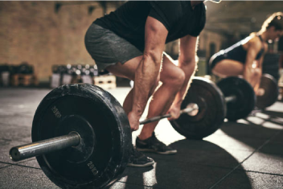
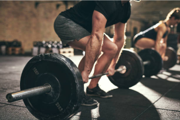

Cardio Training
Cardio is probably the most popular type of exercise out there. Cardio is also one area of exercise that offers limitless kinds of workouts: walking, running, cycling, cross-country skiing, swimming, dancing, you get the idea. Basically, anything that elevates your heart rate to a level above your resting heart rate is cardio.
Weight Training
A common misconception is that weight training will lead to one outcome and one outcome only — hypertrophy. But in fact, there are many goals you achieve through resistance training with weights in the form rep and set schemes along with the percentages of your 1Rm (1 rep max) that you are lifting.
Flexibility Training
Flexibility is more than being able to touch your toes, it's about general musculoskeletal health. While some people are born with natural flexibility.
10 Exercises To Rock Your Body
Cardio Training
1.Burpees
An exercise we love to hate, burpees are a super effective whole-body move that provides great bang for your buck for cardiovascular endurance and muscle strength.
1.Start by standing upright with your feet shoulder-width apart and your arms down at your sides.
2.With your hands out in front of you, start to squat down. When your hands reach the ground, pop your legs straight back into a pushup position.
3.Jump your feet up to your palms by hinging at the waist. Get your feet as close to your hands as you can get, landing them outside your hands if necessary.
4.Stand up straight, bringing your arms above your head and jump.
5.This is one rep. Complete 3 sets of 10 reps as a beginner.
2.Squats
Squats increase lower body and core strength, as well as flexibility in your lower back and hips. Because they engage some of the largest muscles in the body, they also pack a major punch in terms of calories burned.
1.Start by standing straight, with your feet slightly wider than shoulder-width apart, and your arms at your sides.
2.Brace your core and, keeping your chest and chin up, push your hips back and bend your knees as if you're going to sit in a chair.
3.Ensuring your knees don't bow inward or outward, drop down until your thighs are parallel to the ground, bringing your arms out in front of you in a comfortable position. Pause for one second, then extend your legs and return to the starting position.
4.Complete 3 sets of 20 reps.
3.Rowing Machine
The rowing machine offers a total body workout. Additionally, it has the benefit of being impact free, and it does not involve bearing weight.
1.Sit in the seat and strap the feet to the platform.
2.Bend the legs and pull the knees in.
3.Keep the arms straight and grip the oars.
4.Push against the platform with the feet while moving the body up and the arms back.
5.Fully extend the legs, then pull the arms back and bend the knees.

4.Treadmill
A person using a treadmill is essentially running but with less impact on their joints. The treadmill is also easily adjustable for each individual's needs. A person using a treadmill should start at a pace that suits their fitness level.
Weight Training
1.Standing Overhead Dumbbell Presses
Compound exercises, which utilize multiple joints and muscles, are perfect for busy bees as they work several parts of your body at once. A standing overhead press isn't only one of the best exercises you can do for your shoulders, but it also engages your upper back and core.
1.Pick a light set of dumbbells — we recommend 10 pounds to start — and start by standing, either with your feet shoulder-width apart or staggered. Move the weights overhead so your upper arms are parallel to the floor.
2.Bracing your core, begin to push up until your arms are fully extended above your head. Keep your head and neck stationary.
3.After a brief pause, bend your elbows and lower the weight back down until your triceps muscle is parallel to the floor again.
4.Complete 3 sets of 12 reps.
2.Single-Leg Deadlifts
This is another exercise that challenges your balance. Single-leg deadlifts require stability and leg strength. Grab a light to moderate dumbbell to complete this move.
1.Begin standing with a dumbbell in your right hand and your knees slightly bent.
2.Hinging at the hips, begin to kick your left leg straight back behind you, lowering the dumbbell down toward the ground.
3.When you reach a comfortable height with your left leg, slowly return to the starting position in a controlled motion, squeezing your right glute. Ensure that your pelvis stays square to the ground during the movement.
4.Repeat 10 to 12 reps before moving the weight to your left hand and repeating the same steps on the left leg.
3.Dumbbell rows
Not only will these make your back look killer in that dress, but dumbbell rows are also another compound exercise that strengthens multiple muscles in your upper body. Choose a moderate-weight dumbbell and ensure that you're squeezing at the top of the movement.
1.Start with a dumbbell in each hand. We recommend no more than 10 pounds for beginners.
2.Bend forward at the waist so your back is at a 45-degree angle to the ground. Be certain not to arch your back. Let your arms hang straight down. Ensure your neck is in line with your back and your core is engaged.
3.Starting with your right arm, bend your elbow and pull the weight straight up toward your chest, making sure to engage your lat, and stopping just below your chest.
4.Return to the starting position and repeat with the left arm. This is one rep. Repeat 10 times for 3 sets.
Flexibility Training
1.Intense Side Stretch (Parsvottanasana)
This forward bend stretches your spine, legs, and hips and can work wonders foThis forward bend stretches your spine, legs, and hips and can work wonders for your balance, posture, and digestion.r your balance, posture, and digestion.
1.While standing, place your left foot in front of you, facing forward. Place right foot back, with toes turned out at a slight angle.
2.Square your hips to face forward.
3.Put hands on hips.
4.Bend at hips, working to keep spine and neck long as you fold forward.
5.Drop hands to the floor (or use a yoga block!).
6.Hold the pose for 30 seconds to 1 minute, and then come back up to standing.
7.Swap the positions of your feet (right foot forward now!) and repeat.
2.Head to Knee
This pose is great for increasing flexibility in your hips, thighs, and back while also increasing blood flow in your lower abs and relieving stress.
1.Sit on a yoga mat (the floor works too!) and extend your right leg forward.
2.Breathe in and sit up tall as you raise your arms overhead.
3.Bend your left knee out to the side, pressing left foot into right inner thigh.
4.Hold on to your outstretched foot or leg or place your hands on the floor.
5.Breathe out and bend at hips as you fold forward toward right leg.
6.Switch your legs to stretch the other side.
7.Remain in this pose for 1-2 minutes.

3.Side Bend
Core with an emphasis on obliques; lats and shoulder girdle stabilizers.
1.Begin sideways to the ball and have your top leg straight and pressing into the wall. Your bottom knee can remain on the floor for more stability, or you can straighten both legs for added difficulty.
2.Drape the side of your body over the ball with your hands behind your head. Inhale.
3.Exhale to lengthen and side bend up toward the ceiling.
4.Inhale to bend back down over the ball, stretching the side of your body.